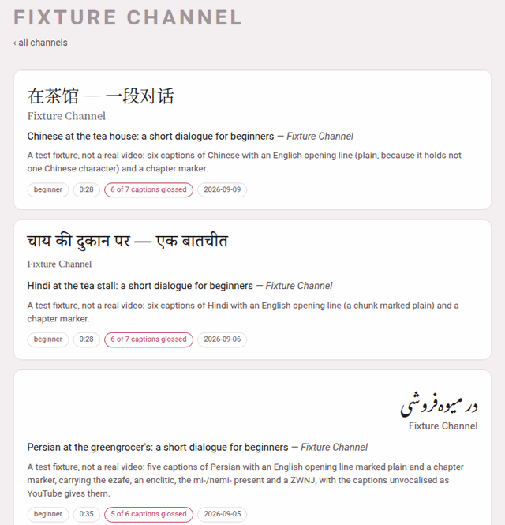

The video index and channels
1. Channels first, then videos#
The videos page, /youtube/, is a tree of two levels: first a channel, then a video of that channel. There is deliberately no page that lists every video flat. With a few dozen videos across several channels, the channel is how you actually remember which one you want — “the one from the bakery series” — and a flat list of forty titles in five scripts is the page nobody reads.
The channels are grouped under a heading per language, in the order of Parseh’s language registry (Persian first). Each heading gives the language’s English name, its own name in its own script, and how many videos it holds.
Above the headings is the toolbox’s row of language chips — all, then one per language that has a video, each with its count. A chip hides every heading and card of the other languages. The choice is the one preference every page of Parseh shares: pick Japanese here and the books’ library, the hub and the add page start on Japanese too.

2. A channel is only a field#
Nothing stores a channel. It is the channel field of each video’s video.json, grouped: a channel appears the moment its first video does, and goes the moment its last one is taken away. A video whose video.json names no channel is filed under Unknown channel, and every film added from this machine without a channel of its own is filed under on this machine.
A channel card says:
| Tag | Means |
|---|---|
| 3 videos | how many videos of this language the channel has |
| 2 fully glossed | how many have phrases under every caption and no phrase left blank — so a video that opens with a caption in another language, which carries no phrases, is not counted |
| beginner, intermediate… | the levels its videos are marked with |
A channel with videos in two languages has a card under each language, and both cards open the same channel page.
3. A channel’s page#
Click a channel card and its page, /youtube/c/<channel>/, lists its videos, newest first, of every language it has them in — ‹ all channels goes back. Each video card shows:
- the title in the video’s own language (
title_native), in its own script and direction — the Persian card above reads from the right; - the channel;
- the title in Latin letters, and the channel again;
- the blurb, one sentence on what the video is;
- the tags.
| Tag | Means |
|---|---|
| beginner … advanced | its level, when it has one |
| 0:35 | about how long it is (the last caption’s time) |
| no annotations yet | the directory has a video.json but no captions; the card is drawn quieter |
| 12 of 40 chunks glossed | phrases, not captions, when some are still blank — a video started empty has a phrase under every caption and nothing written in them, so counting captions would call it finished (A video still being glossed) |
| 5 of 6 captions glossed | how many captions carry phrases; a caption entirely in another language (the English opening of many lessons) never does |
| 6 captions glossed | every caption carries phrases |
| 2026-09-05 | the day it was added |
Click anywhere on the card to open the player. A video’s address is /youtube/v/<id>/, whatever its language: an id is unique across languages, so the address does not name the folder.
4. Taking a video off the shelf#
Point at a video card and a ✕ appears in its corner (it also appears when you Tab onto it: the ✕ is the next stop after its card). It asks first:
Take “Persian at the greengrocer’s…” off the shelf?
It is moved to the trash beside the others, not deleted: nothing is lost, and it stops being part of the library.
It means exactly that. The video’s whole directory — transcript, glosses, notes, film, waveform — is moved to youtube/videos/.trash/<id>-<date>-<time>/, a folder no page ever lists, and a message says where it went. To put it back, move that folder back into its language’s folder (youtube/videos/persian/<id>/) and reload: the player reads its folders afresh on every visit. There is no button for that way back, and no button that empties the trash — both are deliberate acts with your file manager.
The same trash receives a video you replace when you add it again (Adding a video).
5. The rest of the page#
Below the channels:
- ＋ Add a video
- — the page that adds one, from YouTube or from a film on this machine, glossed by an LLM or by you (Adding a video).
- ⇆ Sync with Anki
- — for cards you have edited inside Anki; the section Cards and Anki explains it.
- ⇩ Bring a video back
- — takes back a video’s zip, the one the player’s ⤓ makes.
- ⇩ The whole shelf
- — Backup every video and Load from backup.
The last two are explained in Taking videos away and bringing them back. With no video at all, the page says No videos yet — add one below.
The line at the foot of the page names youtube/PROMPT.md, the recipe for writing a video by hand in a Claude Code session opened in the project — the long way, for a video that wants a word list of its own. Everything it does, the add page does from the browser.